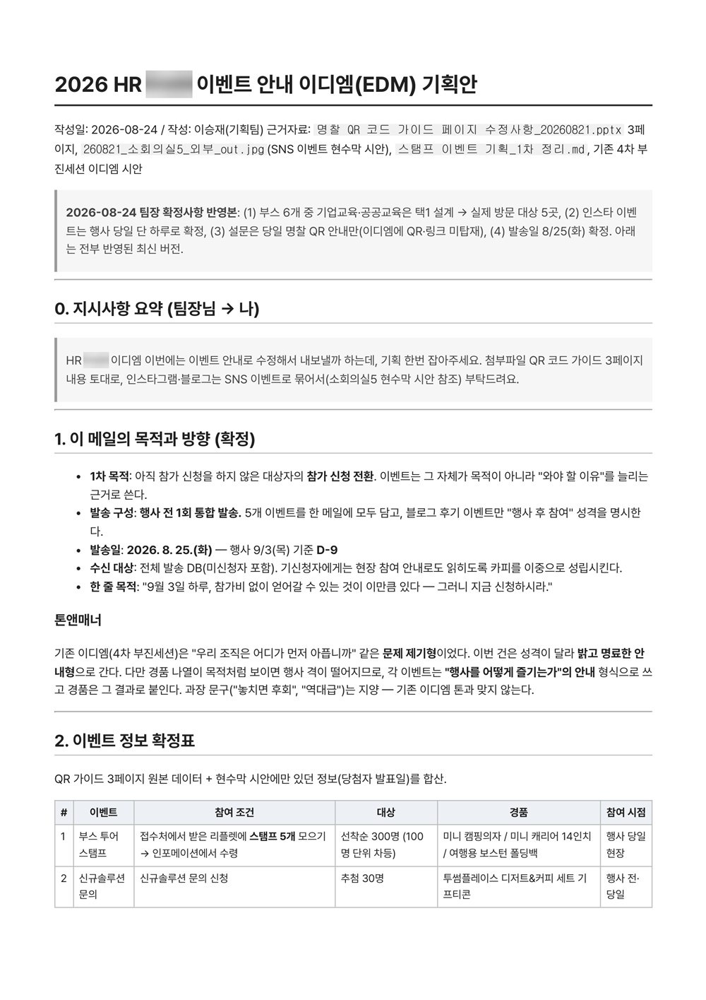
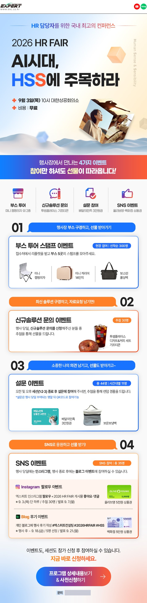
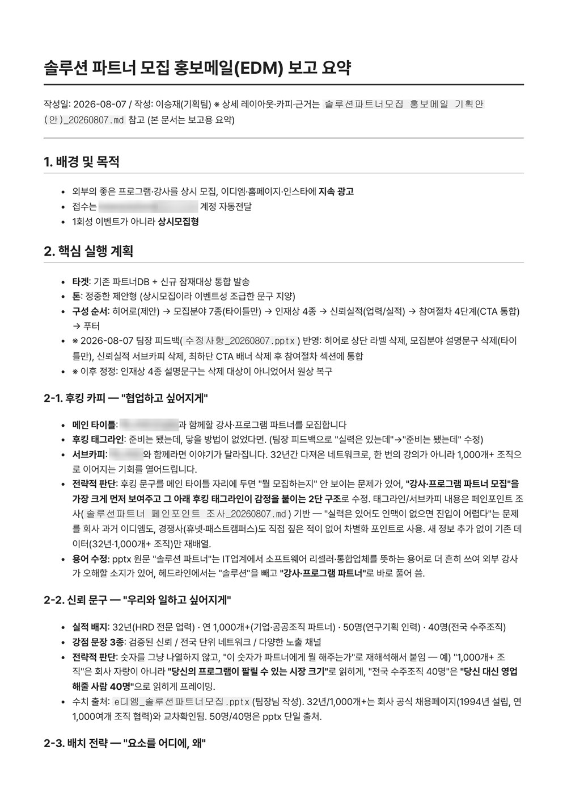
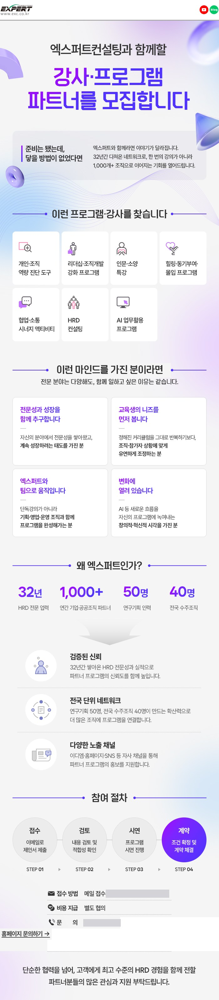
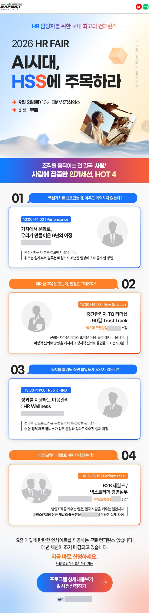
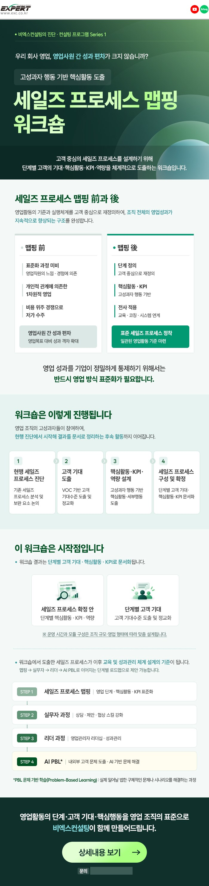

약 700명 규모 HRD 컨퍼런스는 강의장 5곳에서 동시에 세션이 진행되는 구조였고, 발표자료를 한 곳에서 통합·상영해야 했습니다.
발표자마다 다른 환경에서 만든 슬라이드를 한 파일로 합치면 폰트가 깨지거나 레이아웃이 틀어지는 문제가 반복됐습니다. 행사 당일 강의장에서 자료가 깨지면 되돌릴 방법이 없다는 게 가장 큰 부담이었습니다.
강사 발표자료 검수와 취합, 인쇄물 검수, 행사 현장에서의 2차 검수·리허설 진행을 담당했습니다. 자료의 내용 자체는 각 강사의 것이며, 제 몫은 그것이 현장에서 문제 없이 상영되도록 만드는 일이었습니다.
- 강의장 5곳 발표자료 786장(국제 181·의원 181·중A 212·중B 117·소4 95)을 강의장별 통합본으로 합치고, 원본 슬라이드 마스터와 테마를 별도 복제해 서식 유지
- AI로 만든 스크립트로 원본과 통합본의 슬라이드별 사용 글꼴을 대조 검증하고, 강의장마다 다른 강사 글꼴을 USB에 함께 동봉해 현장 폰트 깨짐을 차단
- 현수막·브로셔 시안 검수, 협력강사 브로셔 검수 수행(직접 만든 검수 스킬 사용)
- 행사 현장에서 강의자·진행자와 직접 소통하며 2차 검수와 리허설 진행
- 파트너 모집·이벤트 안내 EDM 기획·발송(발송까지 수행, 성과 수치는 없음). 이후 HR FAIR 프로그램 안내와 세일즈 워크숍 안내 EDM도 기획했고, 최종 디자인은 디자인팀이 제작
강의장 5곳의 발표자료 786장을 사고 없이 취합·상영했습니다. 자료의 내용 자체는 각 강사의 것이며, 제 몫은 취합·글꼴 검증·현장 리허설입니다. EDM은 발송까지만 수행해 성과 수치가 없습니다.
팀장님 지시를 기획서로 정리했습니다. 목적(참가 신청 전환), 톤, 이벤트 5개의 참여 조건·경품·시점을 표로 확정해 넘겼고, 디자인팀이 아래 최종본으로 제작했습니다.


후킹 카피, 신뢰 문구, 배치 순서를 정리하고 팀장님 피드백을 반영한 기획 요약입니다. 수치와 사실 자료는 팀장님이 작성한 원문에서 가져왔고, 구성과 문구 정리가 제 몫입니다.


HR FAIR 프로그램 안내와 세일즈 프로세스 맵핑 워크숍 안내도 기획했고, 디자인팀이 아래 최종본으로 제작했습니다.

디자인팀 최종 결과물 · HR FAIR 프로그램 안내
디자인팀 최종 결과물 · 세일즈 프로세스 맵핑 워크숍연락처·이메일·강사 실명·고객사명은 가렸습니다. EDM의 디자인과 제작은 디자인팀이 했고, 본인 몫은 목적·구성·문구 기획입니다. 성과 수치는 없습니다.
회사명·연락처 등 내부 정보는 가렸으며, 공개 페이지에는 본인이 직접 수행·제작한 산출물만 사용했습니다. 명찰은 제가 기획해 전달하며 Canva로 시안까지 만들었지만, 디자인팀 안이 채택되어 실제로 쓰이지는 않았습니다. 직접 디자인할 수 있다는 예시로 넣었고, 이름 칸은 샘플입니다.